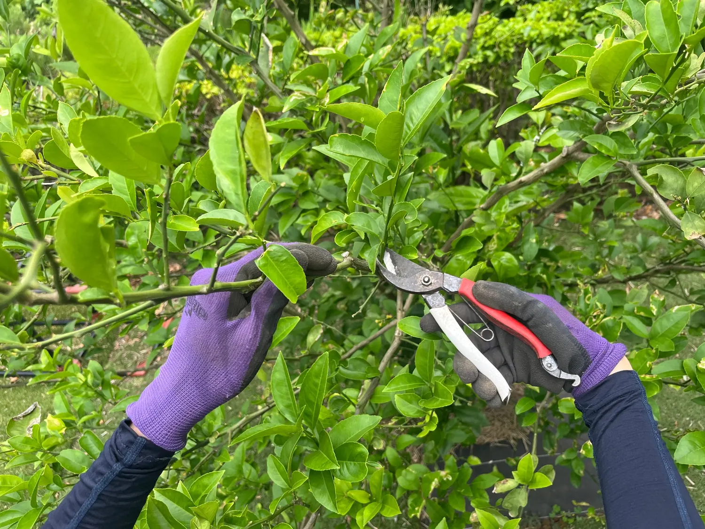
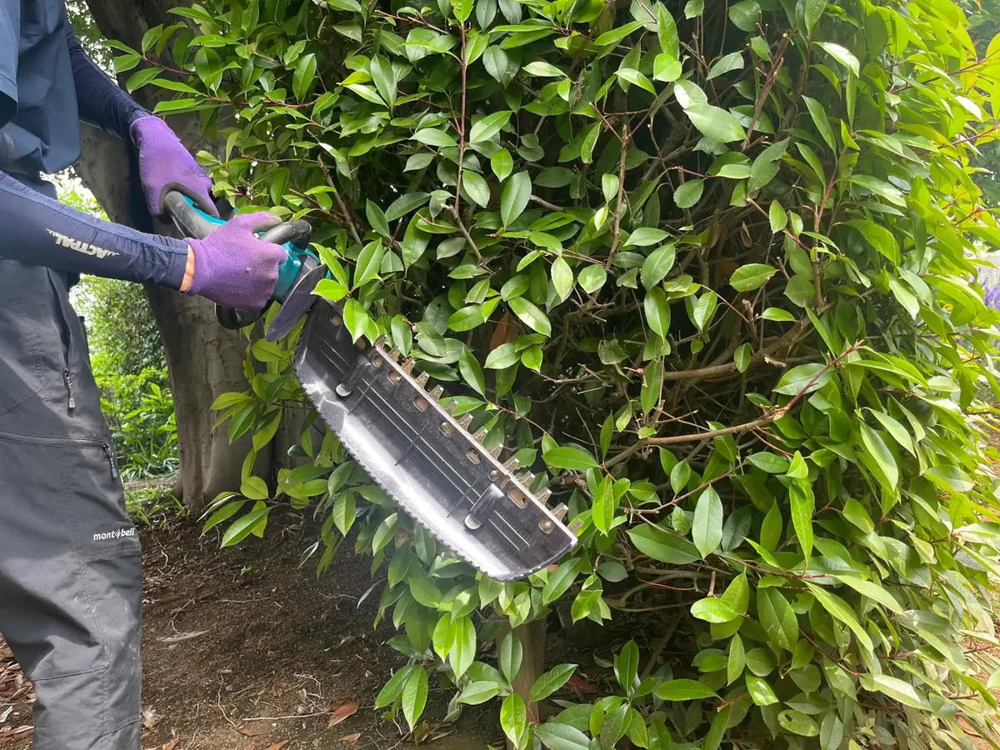

庭木剪定
主に透かし剪定で枝を整理します。
- 1〜2m1,000円〜
- 2〜3m4,000円〜
- 3〜4m7,000円〜
- 4m以上10,000円〜
川越市の庭木剪定
主に透かし剪定を行い、枝を整理して風通しと見た目を整えます。「1本だけお願いしたい」といったご相談でも大丈夫です。


高さを基準にした最低料金の目安です。枝量や作業条件によって料金は変動します。
主に透かし剪定で枝を整理します。
刈り込んで仕立てる庭木を整えます。
枝を適度に抜いて風通しを確保すると、庭木の内側まで光が入りやすくなり、外から見た印象もすっきりします。木の状態とご希望を確認しながら仕上げます。
伸びた枝や混み合った部分を整理し、庭全体を整えます。
連絡前に高さを選んで概算料金を確認できます。
剪定は枝を選んで切り、樹形や風通しを整える作業です。刈込は表面をそろえるように整える作業です。
はい。松の剪定は最低料金10,000円〜となります。
可能です。処分費は枝葉の量に応じて別途ご案内します。
正式な料金は、作業条件や必要に応じた現地確認のうえで分かりやすくご案内します。